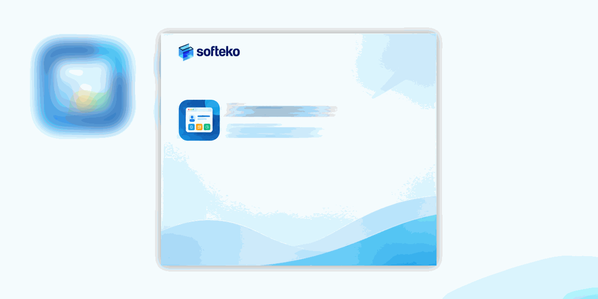

Everything in one place
Select a tab to explore the features, each portal page, setup and support.

Self-service HR, organized simply
The answers employees ask HR for every month—available any time on your website.
Portal Entry
An Employee Portal tile on the standard My Account page.
Personal Details
Contact, citizenship, emergency and location details in one view.
Time Off Balances
Days available per allocated leave type, with validity dates.
Time Off Requests
Submit requests with dates, a note and an optional attachment.
Payslips
Validated and paid payslips with net salary and status.
PDF Preview & Download
Open or download any visible payslip as a PDF.
Attendance Log
Check-in/out records with total and average hours.
Own Data Only
Every page shows records of the signed-in employee only.
Less back-and-forth with HR
Payslips, balances and attendance whenever they need them.
Fewer routine requests; time off arrives through the normal approval flow.
Uses standard Odoo portal users and the regular website login.
What can employees do on each page?
The portal adds 6 pages for employees. Select a page on the left to see what it offers, an everyday example and the real screen.


Four steps to self-service

Link the employee
Set the portal user on the employee, or match their work email.
Employee signs in
They open My Account › Employee Portal on your website.
View & download
Payslips, attendance and personal details—always up to date.
Request time off
Requests go to HR through the normal approval flow.
What the module needs
hr_payroll (Odoo Payroll) is part of Odoo Enterprise. Payslip PDFs use the standard Payroll payslip report, which needs wkhtmltopdf on the server.
Three quick steps
- Install the module from Apps.
- Create a portal user for the employee (for example with Grant Portal Access) and set it as the employee’s Related User—or simply use the same email as the employee’s Work Email.
- The employee signs in and opens My Account › Employee Portal.
Pages added to your website
| URL | Page |
|---|---|
| /my/home | My Account with the Employee Portal tile |
| /my/employee-portal | Employee Portal home |
| /my/personal-details | My Personal Details |
| /my/time-off | My Time Off: balances, request form and history |
| /my/payslips | My Payslips with Preview and PDF download |
| /my/attendances | My Attendance log |
Odoo development, customization and practical business solutions.
Module: Employee Self-Service Portal
Need help with setup?
💻 Developer profile: lamia-akter.odoo.com
🌐 Website: www.softeko.co
💬 Contact page: www.softeko.co/contact/
✉ Email: contact@softeko.co
Frequently asked questions
Which Odoo edition do I need?
The module depends on Odoo Payroll (hr_payroll), which is part of Odoo Enterprise, together with Employees, Attendances, Time Off, Portal and Website.
Can an employee see someone else’s data?
No. Every page looks up the employee linked to the signed-in user and shows only that employee’s records.
Which payslips are shown?
Only payslips in Validated or Paid state. Drafts stay hidden.
Why is a leave type missing from the request form?
The form lists leave types that require an allocation and have a validated allocation for that employee.
Can employees edit their personal details?
No. Personal details are view-only in the portal; HR updates them on the employee record.